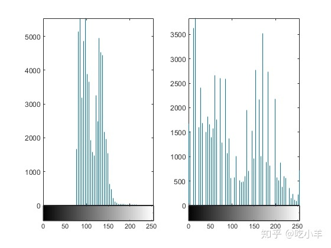

Home
本示例说明了如何通过重新映射数据值以填充整个可用强度范围[0，255]来提高低对比度灰度图像中的对比度。
将图像读入工作区。
I = imread('pout.tif');
用imadjust调节图像的对比度。
J = imadjust(I);
并排显示原始图像和调整后的图像。请注意，调整后的图像对比度增加。
imshowpair(I,J,'montage')
绘制调整图像的直方图。请注意，调整后图像的直方图使用整个范围内的值。
figure subplot(1,2,1) imhist(I,64) subplot(1,2,2) imhist(J,64)

======================================================================
我的测试结果及程序
下面是我测试的代码：

注：本文根据MATLAB官网内容修改而成。